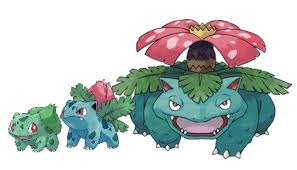
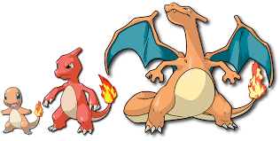
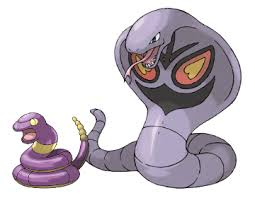

Most of us love watching Pokemon, so here are some interesting facts about Pokemons.

The gender of a Pikachu can be determined by its tail. If the end of its tail is long and flat, it means that it is a male. The tail of the female species is shaped like a heart at its tip. However, when they evolve into Raichu, their tails look more similar to each other.

Bulbasaur is the only unevolved dual type starter Pokémon. Ivysaur is the only Generation I Pokémon whose name begins with the letter I. Venusaur is a combination of the words Venus which refers to the Venus Flytrap plant, and the Greek word saur, meaning lizard.

Charmander is the tallest Fire-type starter Pokémon. Charmeleon is capable of learning Leer in Generation I. Charizard was voted as the favorite Pokémon by Official Nintendo Magazine readers in February 2012.

Squirtle is the first Water-type Pokémon in National Pokédex. Wartortle gets its name from a combination of war/warrior, tortoise, and turtle. Blastoise has the highest base Special Defense of all fully evolved starter Pokémon.
